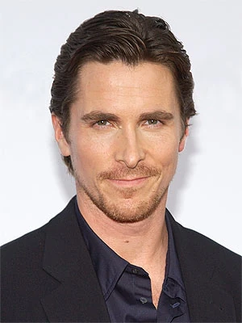
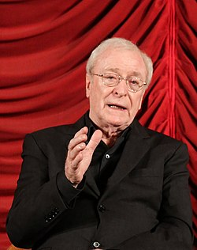
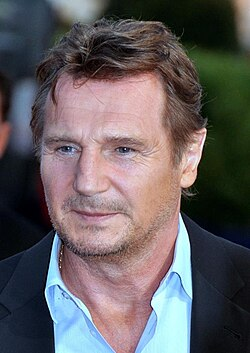
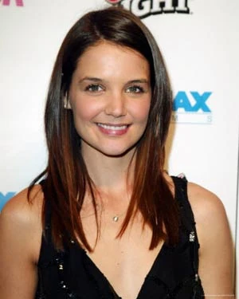
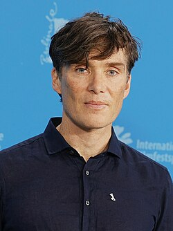
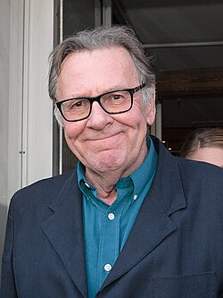
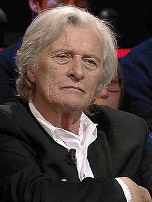
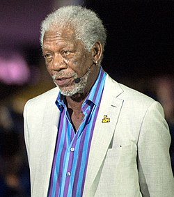

Pelicula
Batman Begins es una película de acción, aventura, drama y suspenso, que se clasifica como un filme de superhéroes y también puede incluir elementos de ciencia ficción. El estilo de la película se caracteriza por su realismo, presentando a Gotham City como una ciudad sucia y decadente, en contraste con el diseño gótico de las películas anteriores. La película se centra en la historia de origen de Batman, explorando su transformación de Bruce Wayne en el Caballero Oscuro.
En BATMAN BEGINS, Bruce Wayne (Christian Bale), traumatizado por el asesinato de sus padres cuando era niño, pierde el norte. Cuando se ve tentado a asesinar al hombre responsable, Bruce observa cómo otra persona mata a tiros al asesino de sus padres. A continuación, Wayne desaparece durante varios años. Cuando otros intentan reclutar a Wayne para que se una a ellos en la destrucción de Gotham City, con el fin de acabar con su maldad, Wayne en cambio regresa para luchar por ella y librarla del mal que lleva dentro. Solicita la ayuda del mayordomo Alfred (Michael Caine) y del fabricante de artilugios de Empresas Wayne Lucius Fox (Morgan Freeman) para crear la "imagen" de Batman. Con la intención de intimidar a los villanos, el nuevo héroe viste un elaborado Bat-traje y conduce un Batimóvil francamente impresionante, un vehículo militar futurista todo terreno, pintado de negro murciélago y capaz de todo tipo de acrobacias vehiculares.
Sinopsis
¿Cómo cambia un hombre el mundo?. Es una pregunta que obsesiona a Bruce Wayne (CHRISTIAN BALE) al igual que el fantasma de sus padres, muertos a tiros ante sus ojos en las calles de Gotham una noche que cambió su vida para siempre. Atormentado por la culpa y la ira, luchando contra los demonios que alimentan su deseo de venganza y su necesidad de honrar el altruista legado de sus padres, el desilusionado heredero industrial desaparece de Gotham y viaja en secreto por el mundo, buscando los medios de luchar contra la injusticia y utilizar el miedo contra los que se aprovechan de los que tienen miedo. En su búsqueda por aprender los entresijos de la mente criminal, Bruce es adiestrado por un misterioso hombre llamado Ducard en el dominio de las disciplinas físicas y mentales que le otorgarán el poder para combatir el mal que ha jurado destruir. Pronto se ve convertido en el objetivo de los intentos de reclutamiento de la Liga de las Sombras, un poderoso y subversivo grupo de vigilantes dirigido por el enigmático líder Ra's al Ghul . Cuando Bruce vuelve a Gotham encuentra la ciudad devorada por una delincuencia y una corrupción desenfrenadas. Wayne Enterprises, el antiguo bastión de ideales comerciales filantrópicos de su familia, ahora está en manos del presidente Richard Earle , un hombre más preocupado por conseguir que la compañía cotice en Bolsa que por servir al bien público. Entretanto, la íntima amiga de la infancia de Bruce, Rachel Dawes , ahora ayudante del fiscal del distrito, no puede lograr que se condene a los delincuentes más conocidos de la ciudad porque el sistema judicial ha sido profundamente contaminado por escoria como el capo Carmine Falcone . No facilita las cosas el hecho de que el prestigioso psiquiatra de Gotham, el doctor Jonathan Crane justifique la defensa por locura para los matones de Falcone a cambio de infames favores que sirven a sus propios y poco limpios asuntos. Con la ayuda de su leal mayordomo Alfred , el detective Jim Gordon - uno de los pocos buenos policías de las fuerzas del orden público de Gotham - y Lucius Fox , su aliado en la división de Ciencias Aplicadas de Wayne Enterprises, Bruce Wayne libera a su imponente alter ego: Batman, un justiciero enmascarado que utiliza la fuerza, la inteligencia y un despliegue de artefactos de alta tecnología para combatir las fuerzas siniestras que amenazan con destruir la ciudad.
Contexto y impacto en el cine
- Estreno: La película se estrenó el 17 de junio de 2005.
- Recaudación: La película recaudó más de 374 millones de dólares a nivel mundial.
- Temas: La película explora temas como el miedo, el remordimiento, la venganza y la búsqueda de justicia.
Batman Begins tuvo un gran impacto en el cine de superhéroes, particularmente al redefinir el género con un tono más realista y oscuro, alejándose de las versiones más caricaturescas que se habían visto previamente.
En resumen, "Batman Begins" no solo fue una película exitosa, sino que también marcó un punto de inflexión en el cine de superhéroes, influyendo en la dirección de otras películas y en la forma en que se percibe el género en la actualidad.
Escenarios principales:
- Chicago: Como declaró el director Christopher Nolan, Chicago fue una importante fuente de inspiración para la Ciudad Gótica, y se usó como escenario de rodaje para la mayor parte de la película, incluyendo la representación de la Wayne Corp.
- Londres: La película también se filmó en Londres y algunos escenarios, como el Asilo Arkham, fueron construidos en estudios de Londres.
- Islandia: Para las escenas en el Himalaya, se utilizó el glaciar Skaftafellsjökull en Islandia.
- Mansión Wayne: La Mansión Wayne fue representada por diferentes edificios, incluyendo las Mentmore Towers, que se encuentran en el Reino Unido.
- Baticueva: La Baticueva fue construida como un escenario en un hangar de aviones en el Reino Unido.
- Asilo Arkham: El Asilo Arkham se filmó en un lugar específico en Londres.
- El Chicago Board of Trade East sirvió de sede para la empresa Wayne Corp.
- Las Torres Mentmore fueron utilizadas para tomas exteriores de la Mansión Wayne.
- Wall Street en Nueva York: fue utilizada para escenas de la empresa Wayne Corp.
Lugares específicos:
Otros lugares:
Rodaje
El rodaje comenzó el 9 de febrero de 2004 en el glaciar Vatnajökull en Islandia (sustituyendo a Bután).El equipo construyó un pueblo y la puerta frontal del templo de Ra's, así como una calle para acceder al área remota.El clima fue problemático, con vientos de 120 km/h, lluvias y falta de nieve. Una toma que Wally Pfister había planeado realizar usando una grúa tuvo que llevarse a cabo con cámara en mano. Buscando inspiración de Superman: The Movie y otras superproducciones de fines de la década de 1970 e inicios de 1980, el director basó la mayoría de la producción en Inglaterra, específicamente los Estudios Shepperton. Un set de la Batcueva se construyó allí, que medía 76 m de largo, 37 m de ancho, y 12 de alto. El diseñador de producción Nathan Crowley instaló doce bombas para crear una cascada de más de 50.000 litros de agua, y construyó rocas usando modelos de cuevas reales. En enero de 2004, Warner Bros. alquiló un hangar para aviones en Cardington, Bedfordshire, durante abril de 2004 y, convertido en un estudio de sonido de 275 m, fue donde se realizó el rodaje del barrio pobre de «los Estrechos» y las patas del monorraíl. Nolan y Crowle eligieron las Torres Mentmore de veinte locaciones distintas para la Mansión Wayne, ya que les gustaron sus pisos blancos, que daban la impresión de la mansión como un homenaje a los padres de Wayne.Para representar el Asilo Arkham, eligieron el edificio del Instituto Nacional de Investigación Médica en Mill Hill, en el noroeste de Londres, y la estación de St. Pancras con las estaciones de bombeo Abbey Mills para los interiores de Arkham.El Colegio Universitario de Londres fue usado para los tribunales.Algunas escenas, incluyendo la persecución del Acróbata, se rodaron en Chicago en ubicaciones como Lower Wacker Drive y 35 East Wacker. Las autoridades acordaron levantar el Franklin Street Bridge para una escena donde el acceso a los Estrechos está cerrado. A pesar de la oscuridad de la película, el director quería hacer que la película atrajera a un amplio rango de edades.Finalmente, el rodaje concluyó el 13 de junio de 2004 en Chicago.
Reparto
Christian Bale como Bruce Wayne / Batman: Un industrial multimillonario cuyos padres fueron asesinados por un ladrón cuando tenía ocho años, y recorrió el mundo por varios años buscando los medios para combatir la injusticia antes de regresar a Gotham City, convirtiéndose en un vigilante y protector nocturno con aspecto de murciélago
Michael Caine como Alfred Pennyworth: El confiable mayordomo de los padres de Bruce, quien continúa con su leal servicio a su hijo después de sus muertes como su confidente más cercano. Aunque Alfred es retratado en la película como un servidor de la familia Wayne por generaciones, Caine creó su propio pasado, en el cual antes de convertirse en mayordomo de los Wayne, sirvió al Servicio Aéreo Especial. Después de quedar herido, Thomas Wayne lo invitó a la posición del mayordomo de la familia, ya que quería un mayordomo, pero a alguien más fuerte que eso.
Liam Neeson como Henri Ducard / Ra's al Ghul: Un hombre misterioso que entrena a Bruce en las artes marciales, inicialmente haciéndose pasar por un servil miembro de la Liga de las Sombras, pero luego revela que es el verdadero Ra's al Ghul, líder de dicho grupo, y que usaba el nombre «Ducard» como un seudónimo para ocultar su identidad.
Katie Holmes como Rachel Dawes: La amiga de la infancia y el interés amoroso de Bruce, que trabaja como la asistente del Fiscal del Distrito de Gotham City, combatiendo la corrupción en la ciudad.
Gary Oldman como el Sgto. James Gordon: Uno de los pocos oficiales de policía de Gotham City incorruptibles, quien estaba en servicio la noche del asesinato de los padres de Bruce y, de este modo, comparte una afinidad especial con el joven de adulto y así también con Batman.

Cillian Murphy como el Dr. Jonathan Crane / El Espantapájaros: Un corrupto psicofarmacólogo trabajando como jefe administrativo del Asilo Arkham, que está desarrollando una toxina inductora del miedo a partir de una flor que crece en el santuario de Ra's al Ghul. El doctor adopta una personalidad basada en una máscara de gas de arpillera que usa durante sus experimentos, en los cuales usa a sus pacientes como conejillos de Indias. Mientras, trabaja con Ra's para contrabandear los ingredientes de su droga a Gotham usando a Carmine Falcone.
Tom Wilkinson como Carmine Falcone: El jefe de la mafia más poderoso en Gotham, que compartió una celda de prisión con Joe Chill luego de que este último matara a los padres de Wayne. Asesina a Chill cuando este decide declarar contra su persona. Luego, negocia con el Dr. Jonathan Crane y Ra's al Ghul entrando de contrabando las toxinas del miedo del doctor mediante sus cargamentos de droga en el transcurso de varios meses, para que puedan mezclarse con el suministro de agua de la ciudad.
Rutger Hauer como William Earle: El director ejecutivo de Wayne Enterprises que introduce a la compañía en la bolsa durante la larga ausencia de Bruce.
Morgan Freeman como Lucius Fox: Un empleado de Wayne Enterprises de alto nivel que fue delegado a trabajar en la División de Ciencias Aplicadas de la compañía, donde conduce estudios avanzados en bioquímica e ingeniería mecánica. Fox le provee a Bruce la mayoría del equipo necesario para llevar a cabo la misión de Batman y es promovido a director ejecutivo cuando Bruce toma el control de la compañía para el final de la película.
Produccion y estudio de grabacion
Warner Bros

Warner Bros. Entertainment Inc. (comúnmente conocido como Warner Bros. o, abreviado, como WB o WBEI) es un estudio de cine y entretenimiento estadounidense con sede en el complejo Warner Bros. Studios en Burbank, California, y una subsidiaria de Warner Bros. Discovery (WBD). Fundada en 1923 por cuatro hermanos, Harry, Albert, Sam y Jack L. Warner, la compañía se estableció como líder en la industria cinematográfica estadounidense antes de diversificarse en la animación, la televisión y los videojuegos, y es uno de los principales "5 grandes" estudios de cine estadounidenses. además de producir sus propias películas, se encarga de las operaciones cinematográficas, la distribución teatral, el marketing y la promoción de películas producidas y estrenadas por otros sellos de Warner Bros., incluidos Warner Bros. Pictures Animation, New Line Cinema, DC Studios y Castle Rock Entertainment, así como varios productores externos.
Datos curioso
Rodaje y efectos especiales: La película se filmó principalmente en Islandia y Chicago, utilizando acrobacias reales y modelos a escala en lugar de un uso extensivo de CGI. Christian Bale y el traje: Bale reveló que el traje de Batman era incómodo y que se encontraba de mal humor al usarlo, lo que, según él, ayudó a su interpretación del personaje, ya que reflejaba la frustración y el enojo de Batman. Michael Caine y la risa de Bale: En una escena, Michael Caine le recuerda a Christian Bale que se había dormido, lo que resultó en una risa espontánea y memorable de Bale. El Batimóvil: El Batimóvil tenía casi 3 metros de ancho y 5 de largo, con un motor V8 Chevy de 5.7 litros que podía alcanzar los 170 km/h. Ra's al-Ghul: El personaje Ra's al-Ghul, que significa "cabeza del demonio" en árabe, se presenta como Henri Ducard en la película, en referencia a un asesino y detective parisino que entrenó a Batman en los cómics. Cillian Murphy y los ojos: Christopher Nolan quedó fascinado por los ojos azules de Cillian Murphy y buscó maneras de tenerlo sin gafas en la película. Título original: La película se llamó inicialmente "Batman 5" y luego "Batman: The Frightening" antes de que se decidiera "Batman Begins". La Baticueva: La Baticueva fue un decorado real, no una creación digital, como lo describió el diseñador de producción Nathan Crowley. Christian Bale y el Batimóvil: Aunque Bale realizó muchas de sus propias acrobacias, no se le permitió acercarse al Batimóvil. Christian Bale y la dormidilla: Christian Bale reveló que en su primera escena con Michael Caine y Morgan Freeman, se durmió después de prepararse para la escena, y Caine lo despertó con un codazo. Nolan y la segunda unidad: Christopher Nolan no quiso utilizar una segunda unidad de filmación, supervisando personalmente cada toma de la película durante los 129 días de rodaje.
Premios y nominaciones
- nom.Mejor fotografía (Wally Pfister)
- nom.Mejor diseño de producción (Nathan Crowley)
- nom.Mejor sonido (Chris Rymer, Stefan Henrix, Peter Lindsay)
- nom.Mejores efectos especiales visuales (Janek Sirrs, Dan Glass, Chris Corbould, Paul J. Franklin)
- nom.Peor actriz secundaria (Katie Holmes)
- nom.Mejor banda sonora (James Newton Howard, Hans Zimmer)
- ganadoraMejor película de género fantástico
- nom. Mejor dirección (Christopher Nolan)
- ganadora Mejor guión (Christopher Nolan, David S. Goyer)
- ganadora Mejor actor (Christian Bale)
- nom. Mejor actriz de reparto (Katie Holmes)
- nom. Mejor actor de reparto (Liam Neeson)
- nom. Mejor música (Hans Zimmer, James Newton Howard)
- nom. Mejor efectos especiales (Janek Sirrs, Dan Glass, Chris Corbould, Paul J. Franklin)
- nom. Mejor vestuario (Lindy Hemming)
- nom.Mejor presentación dramática (formato largo)
- 78 Edición de los Oscar (2006) - Películas del 2005
- BAFTA 2006: Premios de la academia de cine y televisión británica (Películas y series del 2005)
- 26 Edición de los Premios Razzie - Películas del 2005
- Asociación de Críticos de Chicago - Año 2005
- Premios Saturn 2005
- Premios Hugo 2006